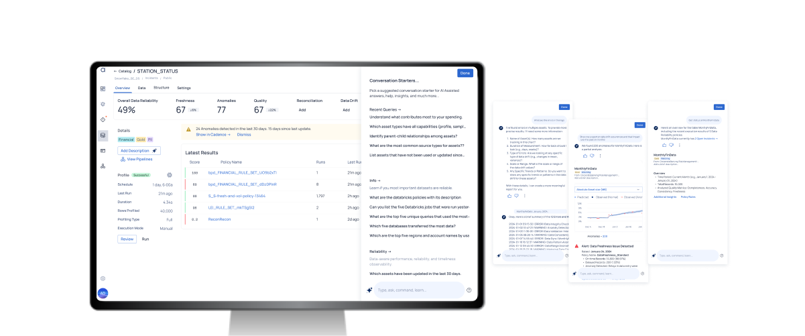
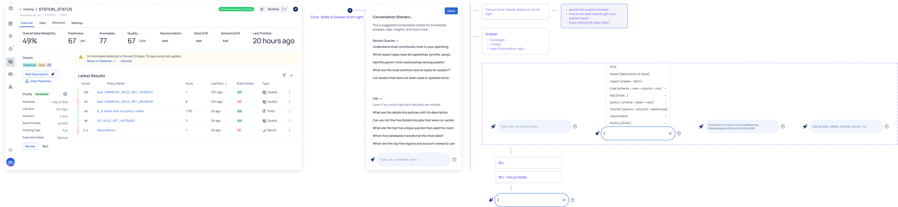
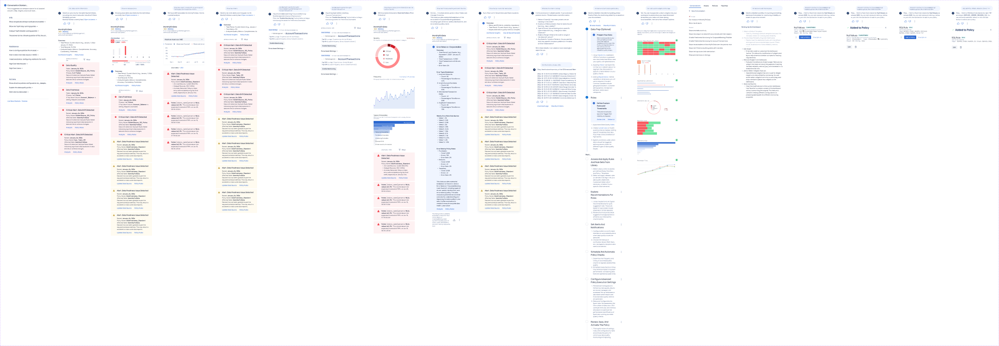

ADOC Copilot is designed to help users manage complex data quality processes at scale. It simplifies the configuration of policies, rules, and reliability checks for data, compute resources, and pipelines. By reducing the complexity of these processes, it enables organizations to maintain high data quality standards while improving efficiency and governance.

Contribution: Principle UX Designer, Interaction Design
Target Users: Analysts, Data Scientists, Data Engineers
Products: Data Observability Platform
Outcome: The Copilot UI improved user satisfaction and adoption rates by enhancing product usability and and context awareness. Teams reported faster decision-making and increased productivity, as the tool provided timely insights and automated repetitive processes. Ultimately, the Copilot Side Panel reinforced the platform’s value proposition, driving customer retention and supporting scalable, data-driven operations.
Leveraging machine learning for anomaly detection, cost forecasting, and recommendations, ADOC Copilot minimizes manual intervention and provides proactive insights. These capabilities empower users to make data-driven decisions with greater confidence, ensuring robust data governance and optimized resource usage.
ADOC Copilot is tailored for Data Scientists, Data Engineers, and Data Analysts who need to manage and maintain high-quality data processes. It supports these professionals by automating routine tasks, enhancing data reliability, and enabling deeper insights to drive business decisions.
ADOC Copilot offers advanced automation and optimization capabilities, including configurable workflows, human-in-the-loop options, and proactive anomaly detection. Its automation capabilities streamline data quality processes, freeing users to focus on strategic initiatives while ensuring operational efficiency and data integrity.

The rationale for implementing a copilot solution is to address key challenges in deploying and using the product while minimizing the need for extensive onboarding or ongoing hand-holding. By introducing role-based landing pages, natural language interface (NLI) prompts, access to recent activity, contextual help, and redesigned secondary pages, the solution simplifies navigation and promotes key entry points. This approach directly reduces the difficulty and complexity of core tasks, making the product more intuitive and self-serve for day-to-day use. The copilot solution ensures that users can achieve their goals efficiently, enhancing productivity and reducing friction in the workflow.

Over time, the Sidepanel experience can evolve into an intelligent, context aware assistant that will accelerate the end user tasks for discovering, configuring and monitoring assets to ensure data quality.
During this project, I contributed to designing and developing the experience for the Copilot tool, to be implemented in phased rollouts. The Side Panel was envisioned as an intelligent, context-aware assistant aimed at streamlining user workflows. Over time, its capabilities evolved to accelerate critical tasks such as discovering, configuring, and monitoring assets to ensure data quality. My work focused on shaping the phased development strategy and ensuring that the Side Panel progressively delivered value by enhancing usability, context-awareness, and efficiency for end users.
 Data Prep for AI-Driven Enterprises
Data Prep for AI-Driven Enterprises Mobile Data Observability
Mobile Data Observability Copilot for Augmented HR
Copilot for Augmented HR Cross-platform Recommendations
Cross-platform Recommendations Policy Workflow Optimization
Policy Workflow Optimization